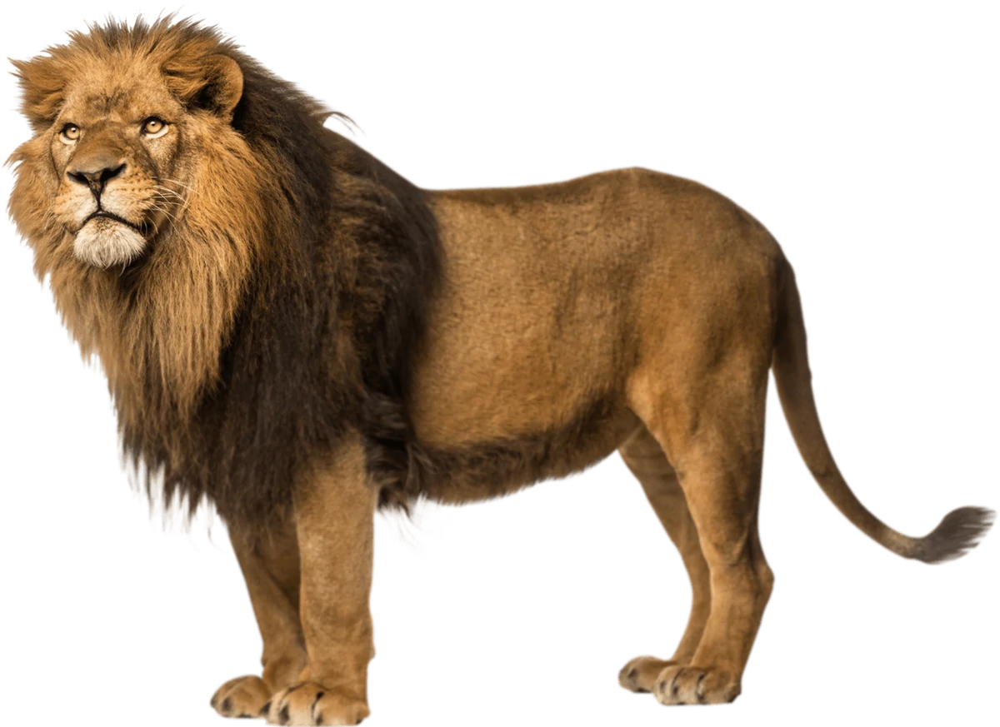

El gato doméstico12 (Felis silvestris catus), llamado más comúnmente gato, y de forma coloquial minino,3 michino,4 michi,5 micho,6 mizo,7 miz,8 morroño9 o morrongo,10 y algunos nombres más, es un mamífero carnívoro de la familia Felidae. Es una subespecie domesticada, por la convivencia con el ser humano, del gato montés.

Como resultado de mutaciones genéticas, cruzamiento y selección artificial, hay numerosas razas. Algunas, como la raza sphynx o la peterbald están desprovistas de pelo; otras carecen de cola, como los gatos de la raza bobtail o la manx, y algunas tienen coloraciones atípicas, como los llamados gatos azules.
El gato se comunica a través de vocalizaciones. Las más populares son su característico maullido y el ronroneo, pero puede aullar, gemir, gruñir y bufar.11 Además, adopta poses o expresiones que informan, a sus congéneres, sus enemigos o sus cuidadores, de su ánimo o sus intenciones.
Por su amplio abanico de presas potenciales, por su alta eficiencia como depredador, y por su elevado éxito reproductivo —especialmente si se suministra artificialmente alimento a las colonias sin tomar medidas adicionales para limitar su fertilidad— el gato doméstico está incluido en la lista de las cien especies exóticas invasoras más dañinas del mundo12 de la Unión Internacional para la Conservación de la Naturaleza.
Existen diversas maneras para diferenciar a un grupo de animales. Son comunes los sustantivos colectivos: jauría (perros), piara (cerdos), bandada (aves) o cardumen (peces). Sin embargo, no existe una forma específica para denominar a un grupo de gatos en la nomenclatura zoológica del idioma español. Por defecto, se utiliza la palabra colonia de gatos.13 Un fenómeno similar se presenta con la denominación de su cría, específicamente en el período de inmadurez.
En general, a la cría se la denomina cachorro de gato o gatito o minino.14 En el argot de las exposiciones felinas, suele denominarse pet a los cachorros más jóvenes que aún no han alcanzado la edad de por lo menos seis meses para entrar a competir. En estos eventos también se habla de gatos neutros y gatos enteros, refiriéndose específicamente a su condición reproductiva, en donde a los primeros se les ha extirpado las gónadas respectivas y no podrán engendrar crías, mientras que los gatos enteros sí podrán reproducirse.
Aquel cuyos ancestros se encuentran registrados formalmente es calificado como pedigrí. En términos estrictos, un purasangre es aquel que posee ancestros de la misma raza, mientras que en el caso de un pedigrí es esencial la existencia de un registro genealógico de sus ancestros, que pueden ser de distintas razas.
A grandes rasgos, existen dos tipos de gatos domésticos: los de pelo largo y los de pelo corto, ambos comúnmente denominados mestizos. De todas maneras, los purasangre componen menos del 10% de la población de gatos domésticos en el mundo.
Tamaño: Miden alrededor de 46 cm de longitud de la cabeza al cuerpo y entre 23-25 cm de altura; generalmente poseen una cola de unos 30 cm de largo (salvo mutaciones/malformaciones o razas como el Bobtail o el Manx)
Peso: Generalmente pesan entre 2,5 y 7 kg; sin embargo, algunas razas como el Ragdoll y el Maine Coon pueden exceder los 11,3 kilogramos. Han existido casos que superaron los 23 kg de peso debido a la sobrealimentación.16 El sobrepeso es perjudicial para el animal y debe ser evitado a través de una dieta equilibrada y ejercicio físico, especialmente en aquellos ejemplares exclusivamente hogareños.
Longevidad: Los gatos domésticos machos tienen una esperanza de vida de entre doce y catorce años, mientras que las hembras suelen vivir uno o dos años más. El ejemplo más longevo del que se tiene registro vivió treinta y ocho años.17 Tienden a vivir más tiempo si se les restringe la salida al exterior (disminuye el riesgo de lesiones producidas por peleas o accidentes y la exposición a enfermedades) y si se los esteriliza (reduce el riesgo de cáncer testicular o de ovarios). Las hembras esterilizadas con anterioridad a su primer celo, tienen menos posibilidades de sufrir cáncer de mama.18 Los gatos callejeros que viven en entornos urbanos con frecuencia viven solo dos años, o menos. Mantenidos en colonias pueden vivir muchos más años.
Pelaje: Con respecto al color, pueden ser de un solo color (como los blancos completos o los negros enteros, que suelen tener pelos negros sueltos por algunas partes del cuerpo), de dos colores, como blanco y negro, blanco y naranja, pardo y blanco o gris y blanco. Pueden tener un patrón de colores atigrado en tonos grises o naranjas (gatos romanos), con el pelo de un solo color en toda su extensión o de dos tipos de colores (la punta del pelo de un color diferente a la parte más cercana al cuerpo). También pueden tener un patrón de color siamés con colores más oscuros en la cara, rabo, patas y orejas. Pueden tener un manto carey, siendo de color negro casi todo el cuerpo con motitas pequeñas o con algunas manchas más grandes en algunas zonas de color naranja o miel. O bien pueden tener tres colores combinados, como, por ejemplo, blanco, negro y naranja.
Orejas: Treinta y dos músculos individuales en la oreja le permiten oír direccionalmente.23 Puede mover cada oreja independientemente de la otra. Gracias a esta capacidad, puede mover su cuerpo en una dirección y apuntar sus orejas en otra. La mayoría posee orejas rectas y erguidas: a diferencia de los perros, las razas con orejas caídas son extremadamente raras (la raza Scottish Folds es una de las excepciones por mutación genética). Cuando está enfadado o atemorizado, instintivamente reclinará sus orejas hacia atrás, cubriendo los canales auditivos.